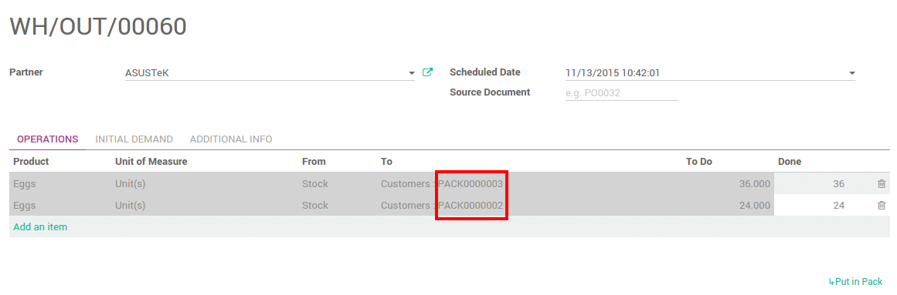

Unit of measures
Units of measures are an indication about the unit used to handle a product. Products can be expressed in multiple units of measure at once.
Activate this option if you are working with several ones in your warehouse.
The purchase unit of measure might be different that the one you use in your warehouse.
The selling unit of measure is set on the sale order and can be different.

Note
The conversion between the different units of measures is done automatically. The only condition is that all the units have to be in the same category (Unit, Weight, Volume, Length,...)
Packages
The package is the physical container in which you put one or several product.
Packaging
Packaging is the physical container that protects your product.
If you are selling computers, the packaging contains the computer with the notice and the power plug.
In Odoo, packagings are just used for indicative purpose.

Note
You can define on the Packages which Packaging it uses. But it is only for indicative purpose.
When to use packages, packagings or unit of measures ?
For example, you are sellings eggs. In your warehouse, you manage the
eggs individually. Lots of eggs are scrapped and you do it egg by egg.
The unit of measure is Unit(s).
If you are selling eggs by the dozen, the selling unit of measure is
the Dozen. You will set it on your sale order.
The cardboard trays that contains the dozen of eggs is the packaging.
When you are selling several trays, you might wrap all the trays into a
box or in a plastic wrapping. It is the package.